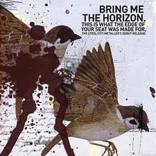
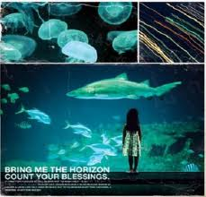
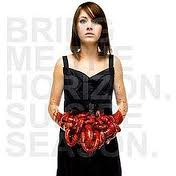
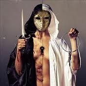
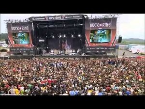

De: La Frikipedia, la enciclopedia extremadamente seria.
De: La Frikipedia, la enciclopedia extremadamente seria. De: La Frikipedia, la enciclopedia extremadamente seria.

|
FRIKIPEDIA QUIERE QUE ESTA DEFINICIÓN
PASE A SER UN ARTÍCULO FRIKIPÉDICO La información contenida en este artículo es una mínima parte de su jugo total, así que ponte los guantes, saca el tupperwere y empieza a exprimir el tema. Si lo haces serás recompensado con una galleta en almíbar y algo más. |
Bring Me The Horizon es una banda scenes-frikis de origenes Ingles , Creada en Inglaterra por Oliver Sykes y Lee Malia; ellos fueron reclutando rechazados antisociales para tocar en el tal "grupo" ya preparado el grupo en los shows en vivo según ellos hacían cosas "gore" o "hardcore" como llevar camisetas blancas con colorante rojo pedir al publico golpearse entre si y slam. Gracias a las adolescentes alborotadas el grupo tomo gran popularidad alrededor del mundo, en conclusión, son una banda para possers mas, que se abastece de los suspiros de las mojabombachas y se alimentan de bandas de menor popularidad como los gays de ISSUES.
El grupo se reunió por primera vez en el año 2000 con sus deseos de emigrar a américa idearon planes en los que sobresalta la banda. Su principal misión: conseguir la fama aparentando ser una buena banda y ,una vez allí, alimentar a los possers del mundo junto con Black Veil Brides y el nuevo Asking Alexandria.
La banda consiguió admiradores al principio porque lo que hacían era considerado como buena música, luego solo por las muchachas alborotadas de alrededor del mundo, osea, possers en estado puro.
 -"This Is What The Edge Of The Seat Was Made For" Con este siendo su primer "EP" Allá en el lejano 2004 decidieron emigrar a Estados Unidos a realizar el "Sueño Americano" Sus integrantes casi mueren en el intento ya que fueron tentados por Prostitutas, drogas y alcohol. Siendo este un álbum con solo 4 canciones sus esperanzas se abrumaron.

-"Count Your Blessings"
A principios del 2006 causaron gran popularidad
con 2 o 3 canciones de este álbum.
Siendo su primer álbum de estudio con excelentes
canciones , riffs rápidos y letra excelente "BMTH"
tuvo mas dinero para satisfacer su necesidad de sexo
alcohol y drogas.

-"Suicide Season"
Para finales del 2008 el grupo lanza este álbum
cambiando la dinámica del grupo y haciéndolo una
banda poser-gay decidieron agregarle detalles de
música "gaylectronica".
Fue devolviendo a estos 4 antisociales al fondo
del abismo llamado Inglaterra.

-"There´s A Hell Believe Me I´ve Seen It , There´s A Heaven Lets Keep It As Secret"
A finales del 2010 el grupo lanza este como su
tercer álbum de estudio .
Añadiendo instrumentos completamente fuera de
lo común y tocando junto a artistas reconocidos "Bring Me The Horizon"
Arruino su reputación en la música pesada con
este álbum ya que todas y cada una de sus canciones
son extremadamente possers.
Archivo:BMTH Sempiternal -"Sempiternal" En 2013 sacaron su cuarto album de estudio. Este album mejeoro su reputación pero todavia sigue siendo demasiado posser emo y/o gay.
-"That´s The Spirit"
Sin duda alguna el album mas gay y posser que jamas pudieron sacar, con canciones de cuna super pasivas y una o dos canciones "jebis", este album fue el ultimo y tiro todo el respeto que se tenia por BMTH a la m#$%&@.
Es el nuevo videoclip sacado el 21 de octubre de 2014. No se sabe si pertenecera a Sempiternal o a otro album mas posser que su puta madre( creo que es lo segundo)
El grupo de Guilipollas mariconsotes sufrió una decaída fatal. En fin para finales del 2012 o comienzos del 2013 se rumorea que se lanzaran su cuarto álbum de estudio , esto si el cáncer de el vocalista Oliver Sykes y el sífilis del Bajista lo permiten.
Si hay dudas visitar : Enlace externo . 
Autor(es):